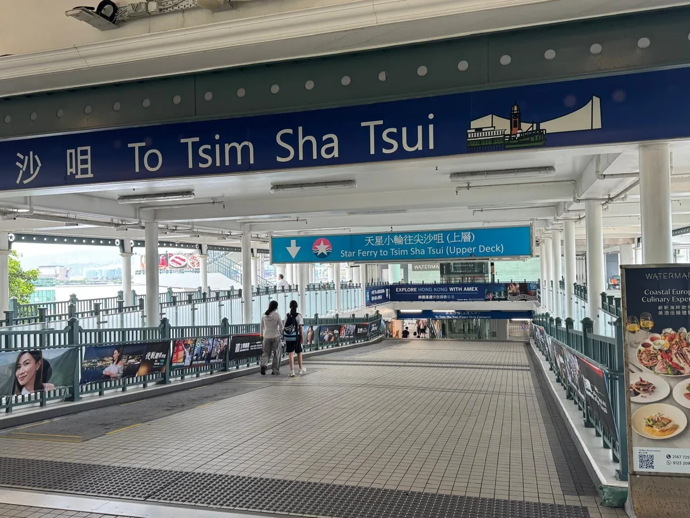
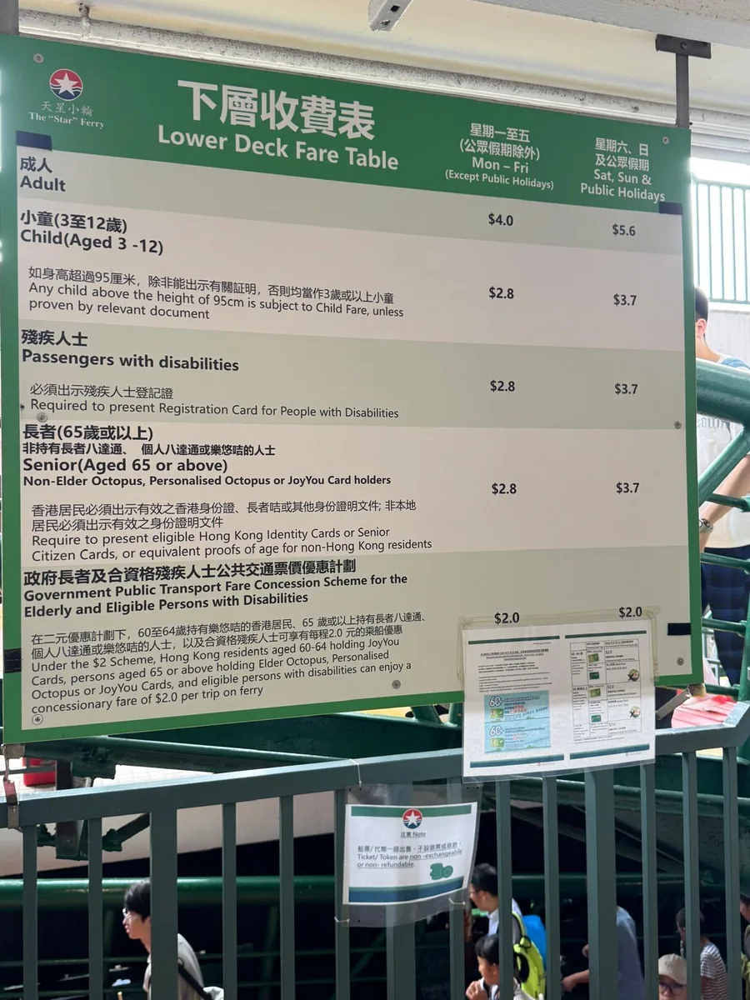
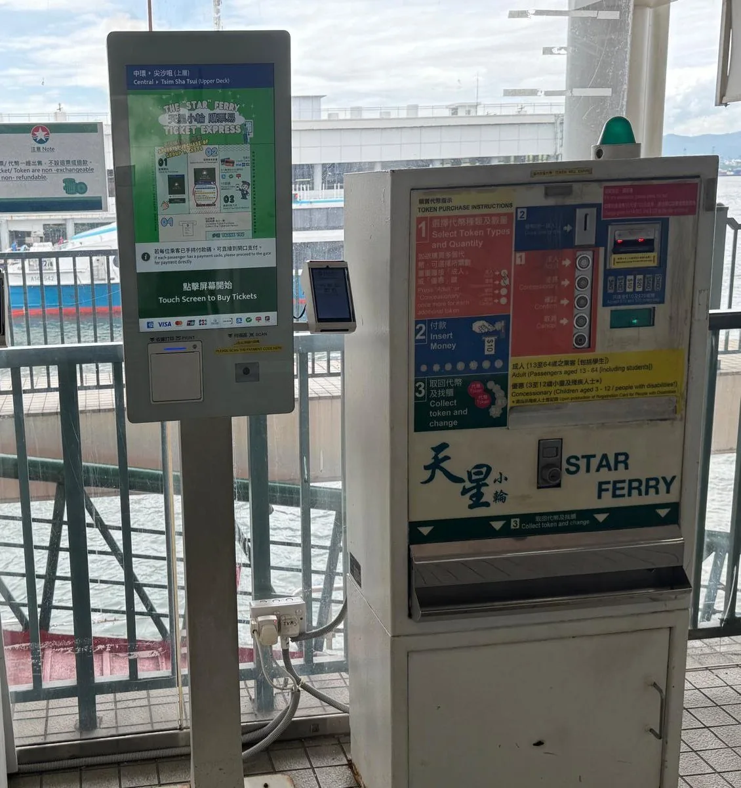
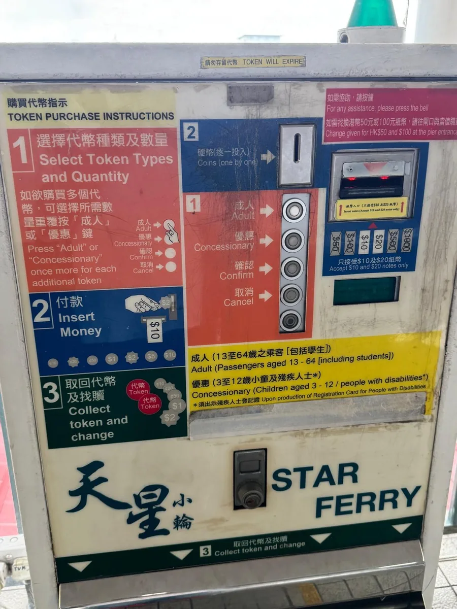

香港スターフェリー、はじめての乗り方料金・支払い・上層と下層の違いまで【2026年版】
香港にいらしたお客様をアテンドしていると、ビザや法人設立の合間に、必ずと言っていいほど聞かれる質問があります。
「あのフェリー、どうやって乗るんですか？」
スターフェリー（天星小輪）。香港島と九龍半島のあいだ、ビクトリアハーバーを渡る小さな船です。1880年代から運航を続けていて、ナショナルジオグラフィック誌の「人生で一度は訪れるべき50の場所」にも選ばれています。
料金は片道100円ほど。乗ってしまえば10分足らずの船旅ですが、初めてだと券売機や改札で少し戸惑うかもしれません。現地からその「少し」を埋めるのが、この記事です。

航路と所要時間
スターフェリーの主な航路は二つです。
- 尖沙咀（チムサーチョイ）⇔ 中環（セントラル）：観光にもビジネスにも使う王道の航路
- 尖沙咀 ⇔ 湾仔（ワンチャイ）
所要時間はどちらも10分前後。朝6時半ごろから夜23時半ごろまで、6〜12分間隔で出ています。時刻表を調べる必要はほとんどありません。乗り場に行けば、次の便がすぐ来ます。
MTR（地下鉄）でも同じ区間を移動できますが、料金はフェリーの方が安く、なにより景色がまったく違います。
料金 — 世界有数の「安い絶景」
2026年8月時点の料金です（下層デッキ・片道）。
| 平日 | 土日祝 | |
|---|---|---|
| 大人 | HK$4.0（約80円） | HK$5.6 |
| 子ども（3〜12歳）・65歳以上 | HK$2.8 | HK$3.7 |
上層デッキは少しだけ高く、大人HK$5.0（土日祝HK$6.5）です。
ビクトリアハーバーの景色を眺めながらの10分間が、コーヒー1杯より安い。香港で暮らしていても、これはちょっとした贅沢だと思います。
なお、65歳以上の方などを対象に、政府の優遇制度（1乗車HK$2.0）もあります。長期で滞在されるご家族がいる場合は覚えておくと役立ちます。

乗り方 — 支払いは3パターン
改札は地下鉄と似た形式です。支払い方法で分かれます。
① オクトパスカード（一番かんたん）
香港の交通ICカード。改札にかざすだけです。香港に数日以上滞在するなら、空港で作っておくのが結局いちばん楽です。
② クレジットカードのタッチ決済・QRコード
近年は券売機のタッチパネルでチケットを買う方法や、対応カードでそのまま改札を通る方法も整っています。VisaやMastercardのタッチ決済に対応した機械が乗り場にあります。
③ 現金 → トークン（コイン）を買う
昔ながらの券売機で、トークンと呼ばれる専用コインを買って改札に入れる方式です。「Adult（大人）」のボタンを押してお金を入れ、出てきたトークンを受け取るだけ。紙幣は$10と$20のみ対応なので、細かいお金を用意してください。
乗り場では、新しいタッチパネルの券売機と、このトークン式の機械が並んで働いています。トークン機はかなりの年代物で、ボタンの感触も含めて、香港の「変わらない部分」を体験できる場所です。急いでいないときは、一度試してみてください。


上層と下層、どちらに乗るか
スターフェリーには上層（Upper Deck）と下層（Lower Deck）があり、入口が分かれています。
眺めを重視するなら上層。窓が大きく、座席からの視界が開けています。
香港らしさを味わうなら下層。海面に近く、エンジンの音と潮の匂いがダイレクトに届きます。料金も少し安い。地元の空気に近いのはこちらです。
現場からのひとこと
私たちのおすすめの時間帯は、朝です。通勤の時間帯を少し外した午前中、朝日を受けたビル群を海から眺めると、この街が「今日も動き出した」という空気が伝わってきます。夜景の時間帯が人気ですが、朝の便は空いていて、景色を独り占めできます。
まとめ
- 尖沙咀⇔中環が王道。10分前後、6〜12分間隔で時刻表いらず
- 料金は大人HK$4.0から。上層でもHK$5.0
- 支払いはオクトパスが最速。現金ならトークン券売機で
- 眺めの上層、雰囲気の下層。おすすめは朝の便
香港の移動はMTRとタクシーで完結してしまいます。ただ、この街の輪郭がいちばんよく見えるのは、実は海の上からです。
出張の合間の10分に、ぜひ一度。
私たちは香港でのビザ・法人設立・銀行口座のご相談を承っていますが、こうした「現地のいま」も、これからお伝えしていきます。
※本記事は2026年8月時点の情報です。料金・運航時間は変更される場合があります。最新情報はスターフェリー公式サイトをご確認ください。
執筆：CSV CONSULTING LIMITED（支援実績7,000社以上／代表のビザコンサル経験27年）